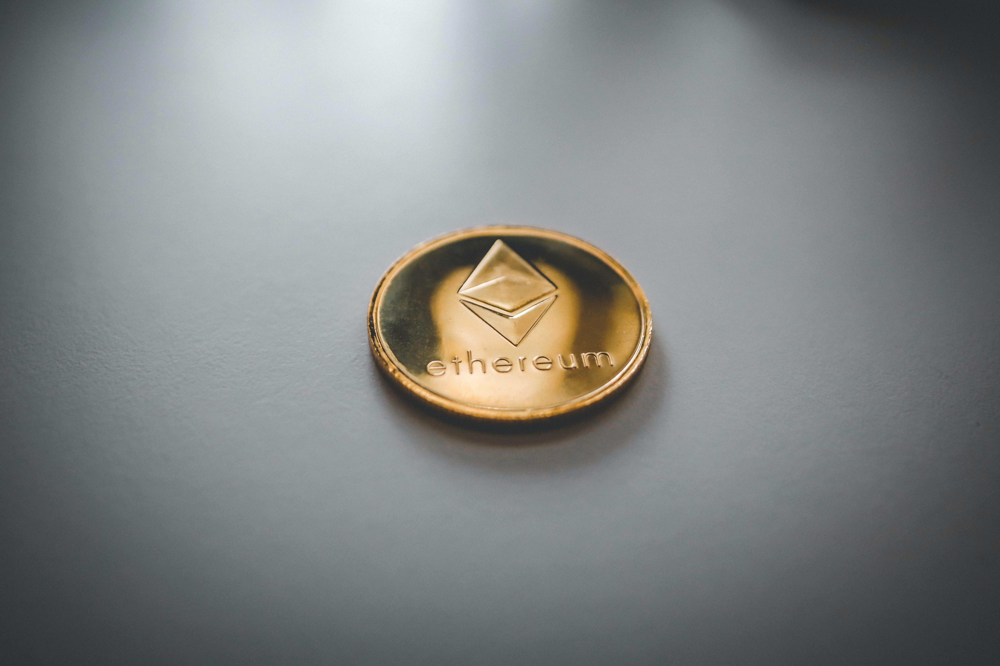

Cryptocurrency
- A cryptocurrency (or crypto currency) is a digital asset designed to work as a medium of exchange wherein individual coin ownership records are stored in a ledger existing in a form of computerized database using strong cryptography to secure transaction records, to control the creation of additional coins, and to verify the transfer of coin ownership.
- It typically does not exist in physical form (like paper money) and is typically not issued by a central authority. Cryptocurrencies typically use decentralized control as opposed to centralized digital currency and central banking systems.
- When a cryptocurrency is minted or created prior to issuance or issued by a single issuer, it is generally considered centralized. When implemented with decentralized control, each cryptocurrency works through distributed ledger technology, typically a blockchain, that serves as a public financial transaction database.
- Bitcoin, first released as open-source software in 2009, is the first decentralized cryptocurrency.[5] Since the release of bitcoin, over 6,000 altcoins (alternative variants of bitcoin, or other cryptocurrencies) have been created.